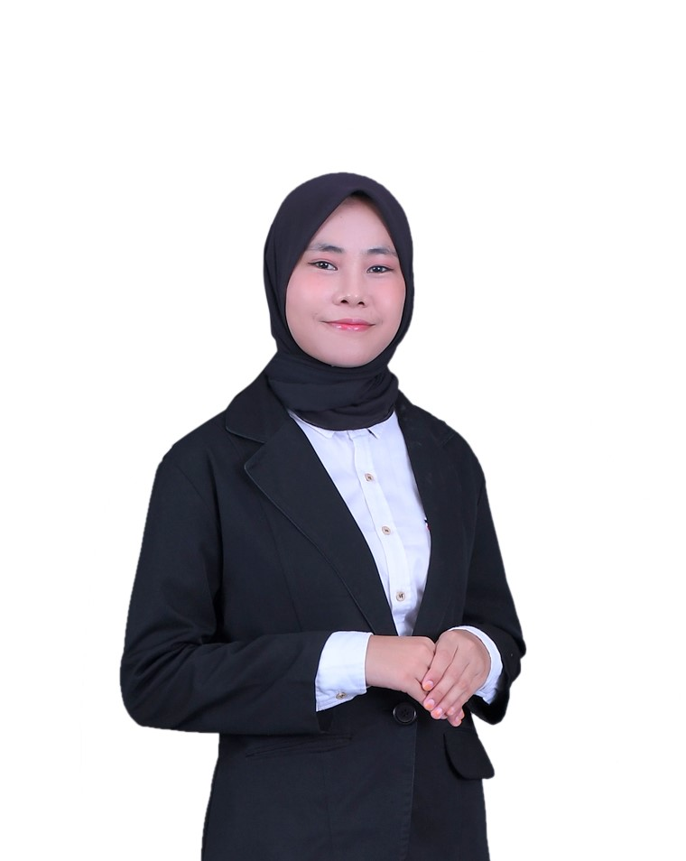

Finding the signal
inside the noise.
Saya, Nurul Rahmi, mengubah data yang kompleks menjadi insight yang jelas, dashboard yang intuitif, dan rekomendasi yang bisa ditindaklanjuti.
Proof in the patterns.
Tiga studi kasus yang memperlihatkan proses dari business question hingga rekomendasi berbasis data.
Retail Sales & Profitability
Analisis performa penjualan, profit margin, produk unggulan, dan pertumbuhan per wilayah.
360°
Customer Segmentation & Retention
Segmentasi RFM, pembelian berulang, dan peluang retensi pelanggan.
HR Attrition & Workforce Insights
Eksplorasi faktor turnover, pola tenaga kerja, dan rekomendasi retensi.
* Semua angka pada visual merupakan data ilustratif. Klik icon untuk melihat hasil analisis dataset asli.
From raw data
to real impact.
Workflow analisis yang sistematis, terdokumentasi, dan mudah dipahami stakeholder.
Rumusan masalah, KPI, dan pertanyaan bisnis.
Cleaning, validasi, dan transformasi data.
EDA, SQL queries, dan pengujian hipotesis.
Dashboard, laporan Word, dan slide PowerPoint.
Tools with purpose.
Setiap tools dipakai pada tahap yang tepat, dari eksplorasi hingga komunikasi hasil.
Cleaning, PivotTable, formulas, quality checks.
Joins, CTE, window functions, KPI extraction.
Pandas, NumPy, Matplotlib, exploratory analysis.
Power Query, DAX, data modeling, reports.
Executive summary, findings, recommendations.
Storytelling, key visuals, stakeholder briefings.

Curiosity meets
clarity.
Saya adalah seorang Data Analyst yang berfokus pada pengolahan data, visualisasi yang bermakna, dan penyampaian insight yang relevan bagi keputusan bisnis. Portfolio ini terus berkembang seiring proyek dan pembelajaran baru.
Let's build something meaningful ↗